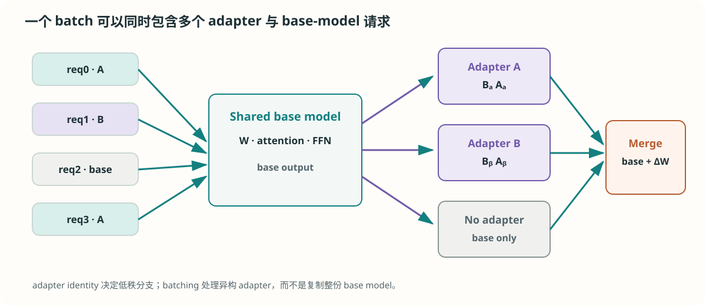
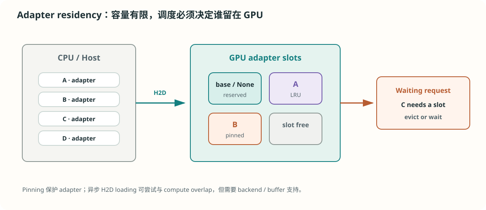

第 14 章 · 多租户适配器服务
Multi-LoRA Serving：异构请求、Adapter Pool 与动态加载
从低秩权重增量出发，理解 SGLang 如何在共享 base model 上调度多个 LoRA adapter。
多 LoRA 服务共享 base model，再根据每条请求选择低秩 adapter 分支。困难在于异构 batch、GPU slot 容量、动态加载、淘汰策略、pinning 与 H2D transfer overlap。
读完本章，你应该能
- 解释核心架构与数据流。
- 区分官方实现、研究背景与教学抽象。
- 使用 CPU toy 实验验证关键边界。
1. 为什么多 adapter serving 不等于多模型副本？
LoRA 通过低秩权重增量适配不同任务。多租户服务更适合共享 base model，只为请求选择对应 adapter，而不是为每个用户复制完整模型。一个 forward batch 可能同时包含 adapter A、adapter B 与 base-model 请求，系统必须按 adapter identity 组织权重与 kernel。

2. 低秩增量的数学结构
常见 LoRA 权重增量可写成：
A、B 的 rank 维度 r 通常远小于原权重维度。base 权重 W 仍然共享，adapter 的低秩分支按请求选择；rank、target modules 和 tensor sharding 仍需符合模型与 backend 支持条件。
3. 异构 batch 如何选择 adapter？
SGLang 支持 OpenAI-compatible API 的 model:adapter-name 形式，也支持 native /generate 请求传递 lora_path。batch 中每条输入可指定 adapter 名称。scheduler 不只管理 request 数量，还要考虑当前 batch 涉及多少 distinct adapter IDs。
4. GPU pool、CPU pool 与淘汰策略
官方文档定义 max_loras_per_batch 为 batch 中 distinct adapter IDs 的上限，base-model 请求的 None 也计入容量。max_loaded_loras 限制 CPU 内存中同时加载的 adapter 数量。GPU pool 满时可使用 LRU / FIFO eviction；pinned adapter 不应被普通淘汰路径移除。

5. 动态加载与异步 H2D overlap
动态 loading 可在运行期间增加 / 删除 adapter。若权重加载成为瓶颈，enable_lora_overlap_loading 可尝试让 Host→Device 搬运与 GPU compute 重叠。它仍需要 buffer、事件同步和 backend 支持；不受支持的 Attention-DP / LoRA 组合会在启动时被拒绝。
6. LoRA backend 与 Attention-DP 约束
LoRA GEMM backend 决定多个 adapter 的低秩矩阵如何组织为批量计算。当前文档列出 Triton 与 Chunked SGMV 等路径。Attention-DP 配置有额外约束：模型须支持 DPA，当前文档要求 Triton backend、attn_dp_size == tp_size，adapter 需要 GPU-pinned。不要把 TP-only 配置推断为 DPA 兼容。
7. 源码阅读路线
- SGLang LoRA docs：参数、API、pinning、PP 与 Attention-DP。
- lora_manager.py：adapter 生命周期。
- mem_pool.py：slot 与 eviction。
- S-LoRA 与 Punica：多 adapter serving 的系统研究。
8. 交互：GPU pool 是否还有空位？
Adapter pool lifecycle
有空位：adapter 可加载到 GPU slot，base model 与 LoRA 请求可混合 batch。
池已满：若存在未 pinned 候选，可按 LRU/FIFO 淘汰；新请求等待 slot 重用。
候选均 pinned：普通 eviction 无法腾出 slot；请求需要等待或调整容量 / pinning 策略。
运行 CPU toy adapter pool，验证 LRU 与 pinned 边界。
9. 限制与容量规划
max_loras_per_batch不是磁盘上 adapter 总数。- base-model 请求的
None也占 distinct ID slot。 - 过多 pinning 会减少可淘汰容量，增加其他 adapter 等待。
- adapter rank、target modules、TP/EP/PP 与 kernel backend 的兼容性必须核对。
容量评测应记录 active adapter cardinality、adapter hit ratio、H2D load latency、eviction / queue wait 与 P95/P99 latency。
10. 参考资料与版本边界
实现快照：sgl-project/sglang@ac0380c7faf9cece3ca32ffe75815af7c585acea。CPU pool 是教学 toy，不等于生产内存布局。